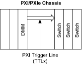
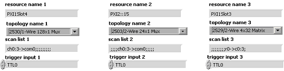
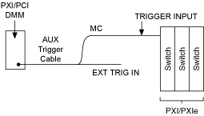
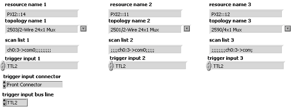

多模块扫描 - 同步
有关可能的触发输入位置，请参阅设备中开关模块的触发主题。
设置 1—使用内部 PXI 触发线
所有 PXI/PXI Express 开关都可以接收来自 PXI/PXI Express 机箱的 PXI 触发线的输入触发。在此设置中，在 DMM 和 PXI/PXI Express 开关之间不使用电缆进行触发。DMM 通过 PXI 触发线将其 MC 信号发送到 PXI/PXI Express 开关。

- 打开niSwitch Multi Switch Synch Int。
- 根据多模块扫描列表中描述的过程创建扫描列表。
- 将所有开关的触发输入设置为相同的 PXI 触发线。该输入线应与 DMM MC 信号的目的地一致。

设置 2 — 使用连接到 PXI/PXI Express 开关前面的 AUX 触发电缆
一些 PXI/PXI Express 开关可以接收来自前面板或接线端子的输入触发。此设置使用 AUX 触发电缆来触发开关。

- 将来自 DMM 的 MC 信号连接到前面板上的外部触发输入端子或一个 PXI/PXI Express 开关的接线盒中。
- 打开niSwitch Multi Switch Sync Ext。
- 根据多模块扫描列表中描述的过程创建扫描列表。
- 将niSwitch Route Trigger Input添加到连接 DMM 的 AUX 触发电缆的开关配置中。
- 将触发输入连接器设置为前连接器。
- 将触发输入总线设置为TTL n。
- 将所有开关的触发输入设置为相同的TTL n。
- 在 DMM 配置中将测量完成目标设置为外部。

 提交有关此主题的反馈。
提交有关此主题的反馈。
 访问ni.com/support以获得技术支持。
访问ni.com/support以获得技术支持。